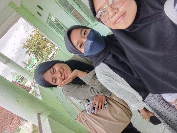
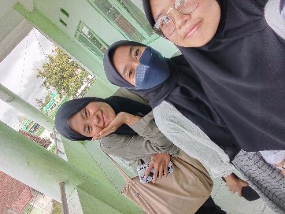
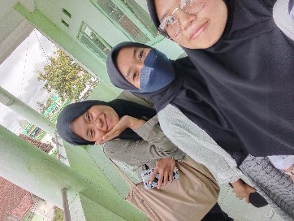

Galeri Kenangan


 



Kebersamaan & Kreativitas Tanpa Batas
Kami adalah Masiswa Kelas A Sistem Informasi STMIK Syaikh Zainuddin angkatan tahun 2022, sebuah keluarga yang tumbuh dengan semangat belajar, kebersamaan, dan kreativitas. Bersama-sama kami menjalani perjalanan perkuliahan, berbagi pengetahuan, serta saling mendukung dalam setiap langkah menuju kesuksesan. Dengan semangat persaudaraan dan kerja keras, kami percaya bahwa kami akan menjadi bagian dari generasi yang siap menghadapi tantangan di masa depan.

Instagram: @kelas_si_5a